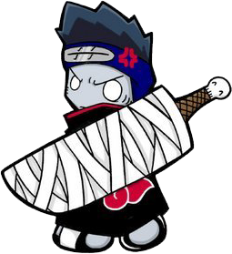

HOSGAKI KISAME
Kisame Hoshigaki(干柿鬼鮫 Hoshigaki Kisame?)adalah persilangan antara hiu dan manusia, dia ditolong oleh Itachi sewaktu Kisame hampir dipancing oleh Sanji untuk makan malam. Padahal, tadinya mau dijadikan Fish Fillet. Ia menggunakan Gilette Vector Plus dengan 10 pisau yang belum dirilis dan tak akan pernah dirilis. Salah satu yang menginginkannya adalah Suigetsu. "Lumayan, dapet pisau Gilette juga," kata Sanji.Kisame punya banyak pekerjaan,dia pernah jadi hewan atraksi peliharaan Badutwi,juga pernah jadi tukang cukur di Yopie salon dan gara-gara ulahnya ia pernah membuat bibir Tukul jadi rata. Sekarang dia jadi pegawai andalan PDAM & PLTA tapi dipecat dan akhirnya jadi tukang sedot tinja. Konon Penyebab Banjir Jakarta 2012 disebabkan oleh ulah Hoshigaki Kishame. Ada gosip yang menyatakan bahwa Hoshigaki Berguru sama Tukulman.